Class definition
You will be annotating the corpus of documents with 5 classes describing the elements found inside historical
documents: illustration, ornament, initial, stamp and table.
Illustration
Description
The class "illustration" should be understood as a generic class encompassing all graphic elements. An
illustration can be functional or artistic; its function is then to inform, illustrate, or entertain the
reader.
Examples of illustrations within an image include paintings, photographs, drawings, mathematical graphs,
charts, diagrams, symbols, and maps. What distinguishes an illustration from an ornament is its own
semantics: it has a meaning that is interpreted in relation to the text, unlike an ornament which is purely
decorative.
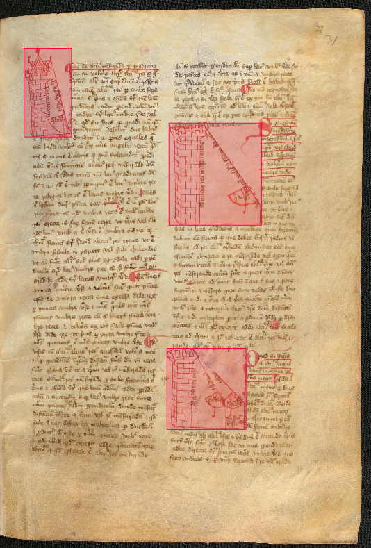
(a) A geometry manuscript that illustrates angle calculations.
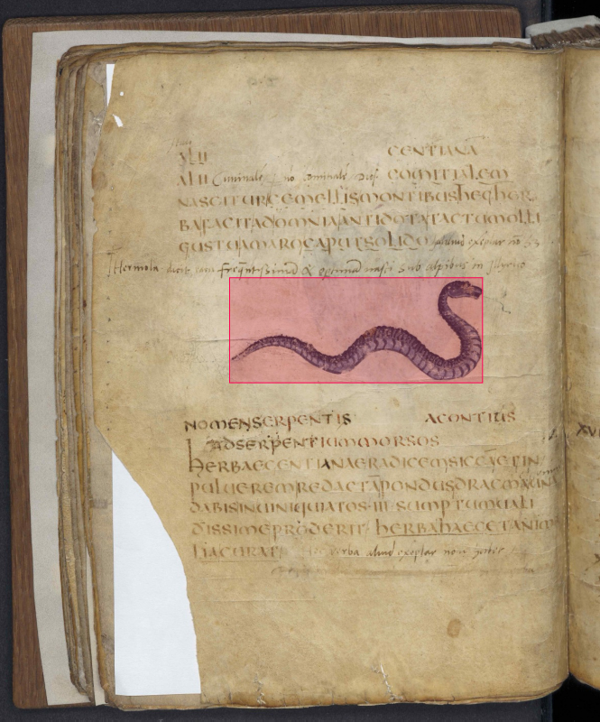
(b) A handwritten bestiary with an illustration of a snake.
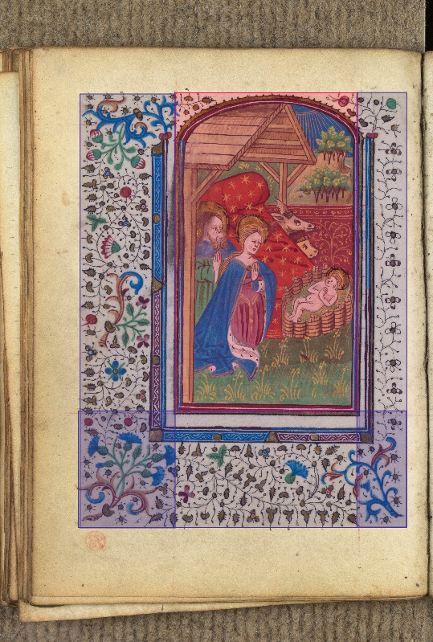
(c) A handwritten book of hours with an illustration amidst floral ornamentation.
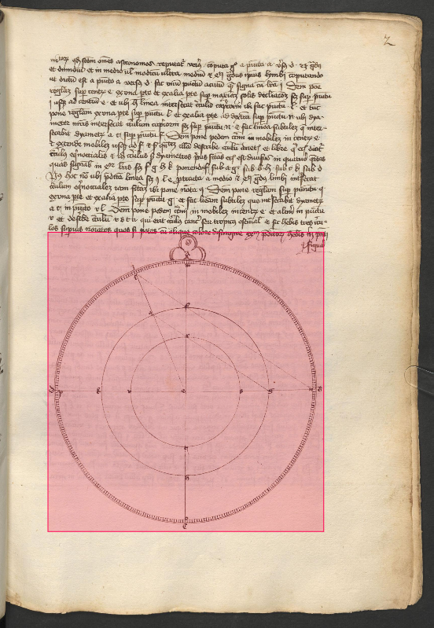
(d) An astronomy manuscript with mathematical diagrams.
Figure 1. Illustration examples.
Rules
The annotation of illustrations can be affected by the layout of the page: they can be grouped, and it is
hard to understand which ones need to be annotated alone and which ones need to be annotated together.
- Is there a frame around multiple illustrations? Illustrations in a frame belong
together and need to be annotated accordingly. The bounding box must be drawn around the limits of the
frame. As shown in Figure 2b of the general rules and
in Figure 2a below, a grouped illustration without a frame
should be separated into multiple annotations.
- Is there a common background? If illustrations share a visual element between them,
they need to be annotated together.
- Do the illustrations touch? If illustrations touch each other, they need to be
annotated together.
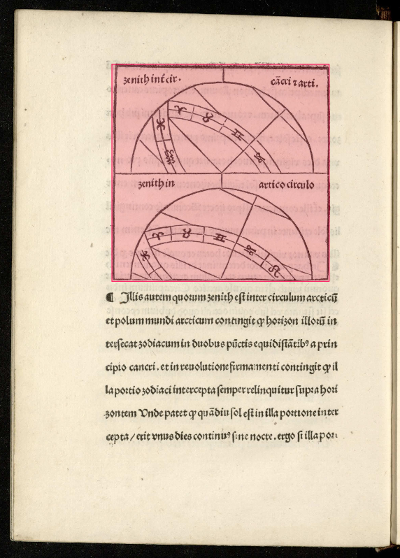
(a) Two illustrations annotated together because they touch and share the same
frame.
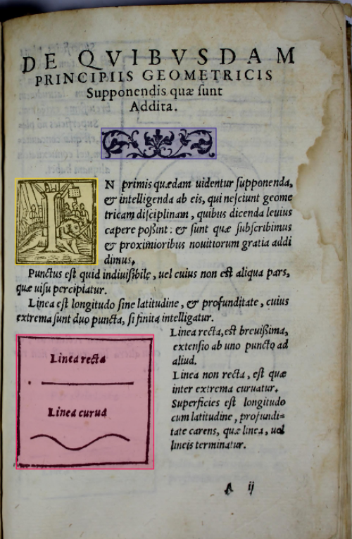
(b) Two illustrations (red) that do not touch but are annotated together because
they share a frame.
Figure 2. Edge cases for illustrations.
Edge cases
- Printer's mark A printer's mark is a symbol that was used as a trademark by early
printers starting in the 15th century. Printers' marks are often placed on the title page, just below
the title and the author's name. The printer's mark should be annotated as an illustration; see
Figure 3.
- Illustration and ornamentation will often be combined into a complex visual element. If
a visual element is composed of an illustration and an ornamentation, the annotator should separate
these elements; see Figure 1c,
Figure 4a and
Figure 4b.
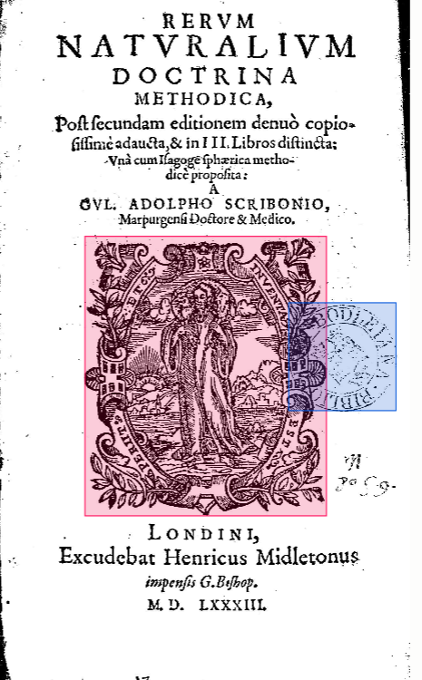
Figure 3. A printer's mark on a title page.
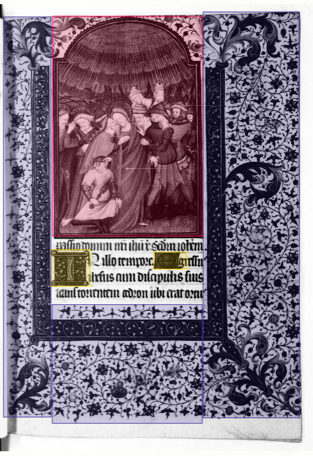
(a) A manuscript that shows how to annotate illustration and ornamentation.
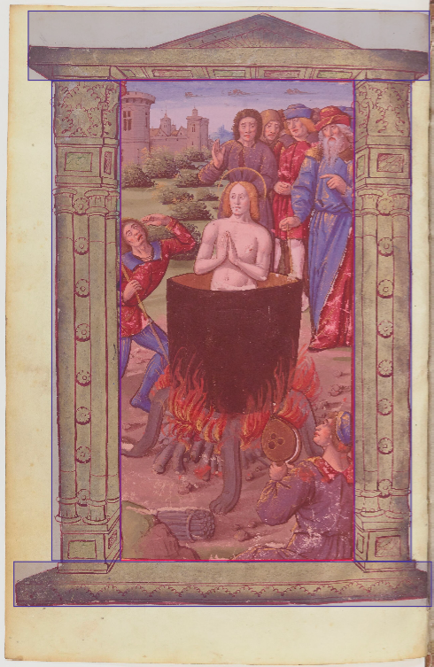
(b) An illustration with an ornamented frame around it.
Figure 4. Illustration and ornament relationships.
Ornament
Description
An ornament is a graphic element that decorates or embellishes a document without adding informational
value.
An ornament is most often an abstract form of illustration, composed of classical patterns (plant ornaments,
abstract headpieces, "cul-de-lampe") or repetitive motifs with no meaning other than their intrinsic value
as ornaments.
Rules & edge cases
Annotating ornaments is inherently complex, because they frequently interact with and wrap around other
elements on the page. Therefore, most ornaments cannot be annotated with a single bounding box. Instead,
when an ornament wraps around a visual element (an illustration, a table, a block of text, etc.), it must be
split into several separate boxes that follow the contour of the underlying element, rather
than being enclosed in one large box that also captures unrelated content.
The following rules apply:
- Typographic elements for page organization (strokes, bold lines, a simple line or a
separator with no complex interaction with the page content) should not be annotated at
all.
- Text inside an ornament is irrelevant to the annotation. In some manuscripts, there is
sometimes text within an ornamental design. Since we are not taking the text into account, these
elements must be annotated as ornaments normally. Whether or not text appears within the ornamented area
does not change how the ornament itself is annotated; see Figure 5b.
- Ornaments wrapping around another element must be cut into multiple pieces that follow
the shape of that element, instead of a single bounding box; see
Figure 5a.
- Linked/split pieces resulting from such a cut must be marked with an overlap so that
they can later be reconstructed into a single logical ornament; see
Figure 5c.
- Ornaments used as separators, for instance to delimit illustrations or tables from one
another, should be annotated as ornaments in their own right; see
Figure 5d.
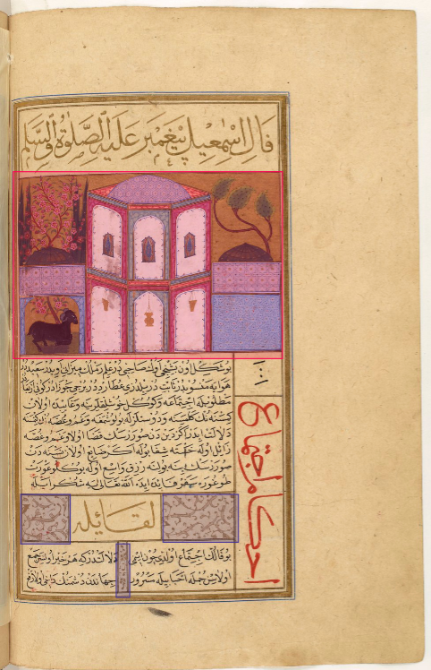
(a) Example of ornament annotations.
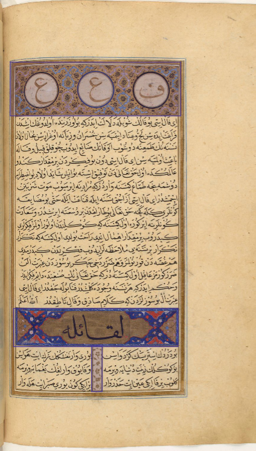
(b) We do not care if there is text inside the ornamentation.
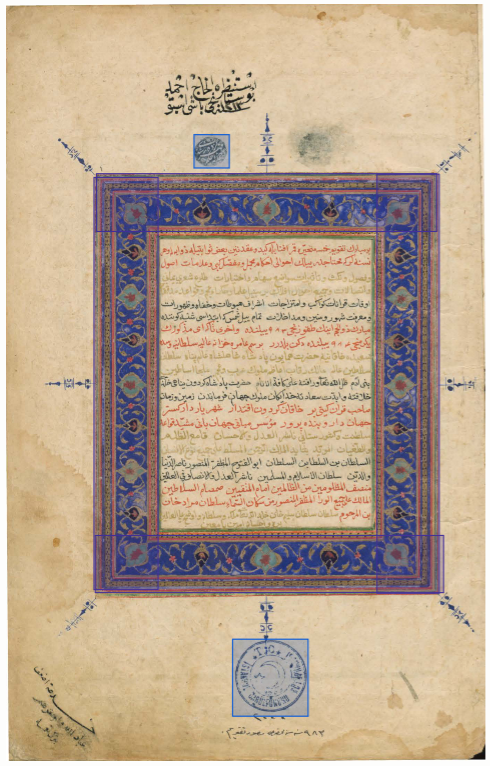
(c) When cutting out ornamentation, pieces that are linked together should be
marked with overlaps so that they can be reconstructed later.
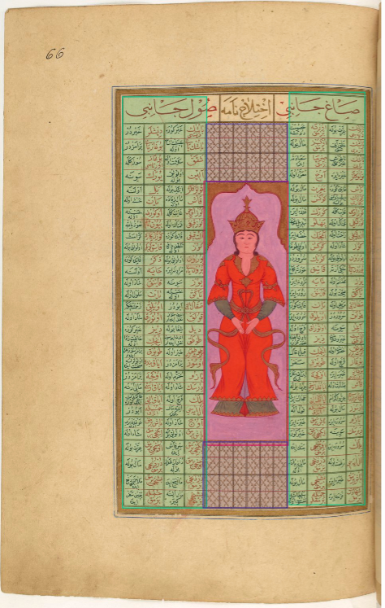
(d) Ornamentation can be used to separate elements like illustrations or tables.
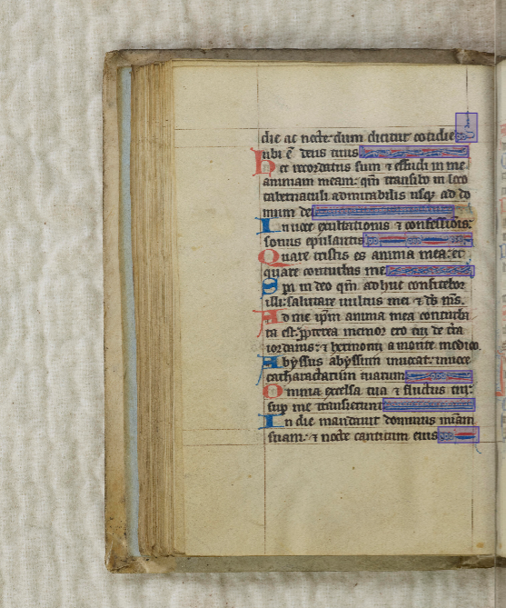
(e) In manuscripts, the end of a line can be ornamented.
Figure 5. Ornament examples.
Initial
Description
In a written or manuscript work, an initial is a letter at the beginning of a word, a chapter, or a
paragraph that is larger than the rest of the text. An initial is often several lines in height and, in
older books or manuscripts, may take the form of a historiated initial.
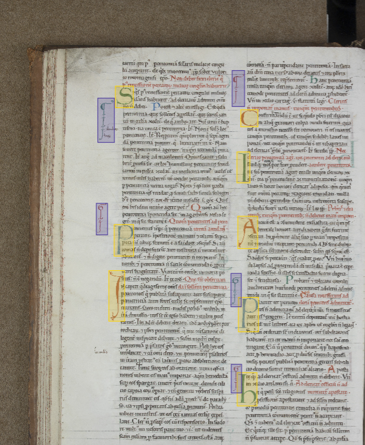
(a) Example of initial annotations.
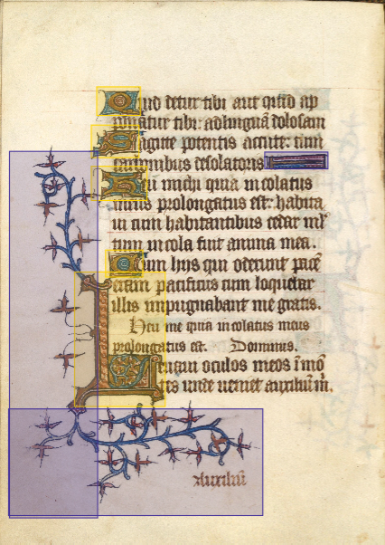
(b) Example of the relationship between the initial letter and the ornamentation,
and how to annotate them.
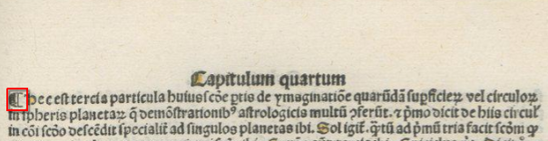
(c) Example of a printed pilcrow (¶).
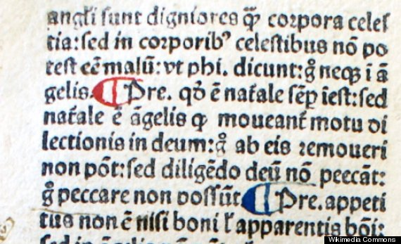
(d) Example of a manuscript pilcrow (¶).
Figure 6. Examples of initials.
Rules
An initial is annotated as such only if it is visually distinguishable from the body text,
typically by a significantly larger size (spanning at least two lines of the surrounding text), a different
script, colour, or decorative treatment. A letter that is only slightly enlarged compared to the running
text should not be annotated as an initial; see
Figure 4b of the general rules.
Edge cases
Initials are letters and therefore can be tricky to annotate due to their textual nature.
- An initial letter can be used in manuscripts as a basis for marginal ornamentation. We
annotate the initial letter in a "cautious" manner, limiting ourselves to the actual initial letter, and
we annotate the rest of the ornamentation using the ornament class; see
Figure 4a of the general rules and
Figure 4a.
- Initial capitals can be confused with the paragraph mark (pilcrow ¶) frequently used in
manuscripts. Often written in ink of a different colour than the text (red), the pilcrow should not be
annotated like an initial capital; see Figure 6c and
Figure 6d.
Stamp
Stamps are marks that identify the institutions that hold or held the documents (libraries, archives). These
markings are not all the same, depending on the document and the date they were applied to the work. For
bound documents (books, manuscripts, albums), the stamp is on the first page. For a stack of unbound
documents, each loose page will be stamped.
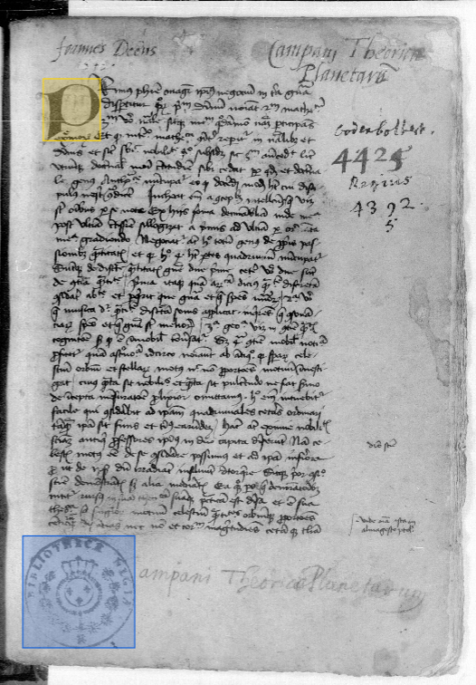
(a) Example of a stamp covering an old bookplate.
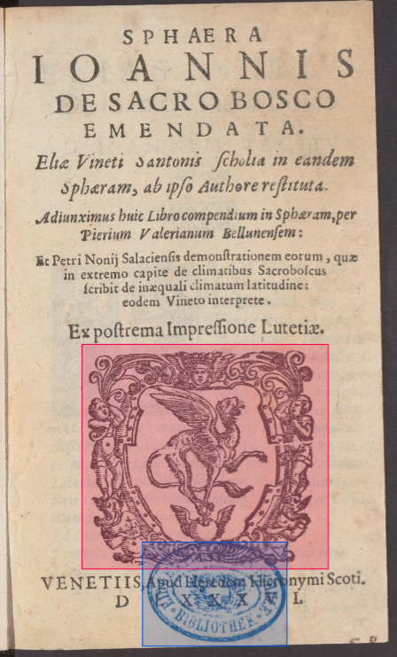
(b) Example of a stamp on a title page.
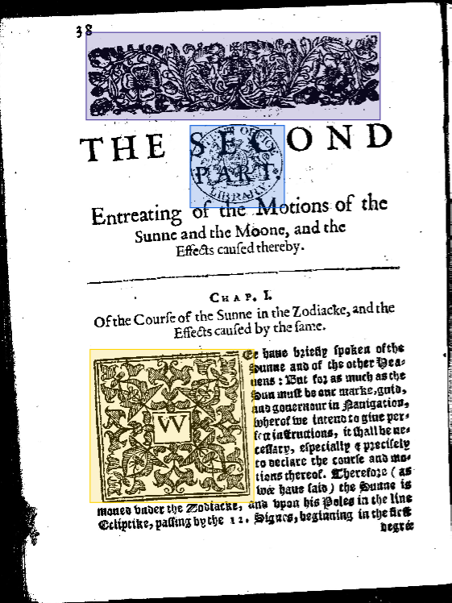
(c) Example of a stamp on a first page.
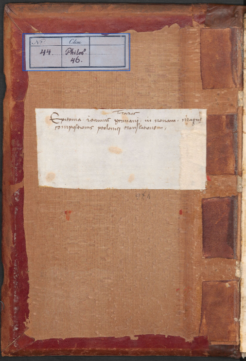
(d) Example of a library label.
Figure 7. Examples of stamps and library labels.
Rules
- Annotate all visible stamps. Manuscripts and old books in France have moved between
several libraries and therefore often have several stamps, which all need to be annotated; see
Figure 7b and Figure 7c.
- Ex-libris. Before the widespread use of the stamp, book owners used a handwritten
ex-libris on the title page; this phrase should not be annotated as a stamp even if it serves the same
purpose; see Figure 7a.
- In addition to library stamps, the stamp class is also used to annotate library labels; see
Figure 7d.
Table
A table is an arrangement of information or data, usually in rows and columns, or possibly according to a
more complex structure. For tables, the header and the footer must be included in the annotation if they are
present.
Rules
- The bounding box must include the entire table structure, including the
header and footer rows if present, as well as any surrounding border or
frame that is part of the table itself; see
Figure 8a.
- If the table has a title or caption that is graphically separated from the table body
(e.g. placed above or below it, not enclosed by the table's border), it should not be
included in the annotation; only the tabular structure itself is annotated; see
Figure 8e.
- Tables with a non-rectangular or non-linear structure (e.g. circular tables, radial
diagrams used to present structured information such as genealogies or calendars) must still be
annotated as tables, using a bounding box that encloses the full extent of the structure.
- If a page contains several distinct tables (not visually merged and separated by clear
spacing, text, or ornamentation), each table should be annotated separately, even if they share the same
overall topic or are placed side by side; see Figure 8d.
- If a table is split across a page break or a column break but is visually one
continuous table (repeated headers, continued numbering, etc.), each visible portion is annotated as a
separate instance, since annotation is done per visible bounding region.
Edge cases
- Tables can be difficult to distinguish from simple lists or aligned text (e.g. an
index, a table of contents, or enumerated items with aligned page numbers). A table should only be
annotated when there is a clear multi-column/multi-row structure with at least two dimensions of
organization; a single column of aligned entries should not be annotated as a table.
- Tables can be enclosed or decorated with ornamentation (borders, frames, or historiated
elements). In this case, only the tabular content and its structural border are annotated as a table;
any additional decorative ornamentation surrounding it should be annotated separately using the ornament
class, following the same logic as for illustrations (see the ornament
section).
- Tables with a circular or radial representation of information (frequent in historical
documents, e.g. astronomical or genealogical diagrams) should be annotated as tables rather than as
illustrations, even though they may visually resemble diagrams or figures.
- Indexes and tables of contents should not be annotated.
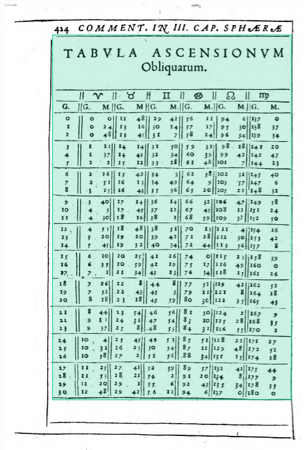
(a) Example of an annotated table with a title.
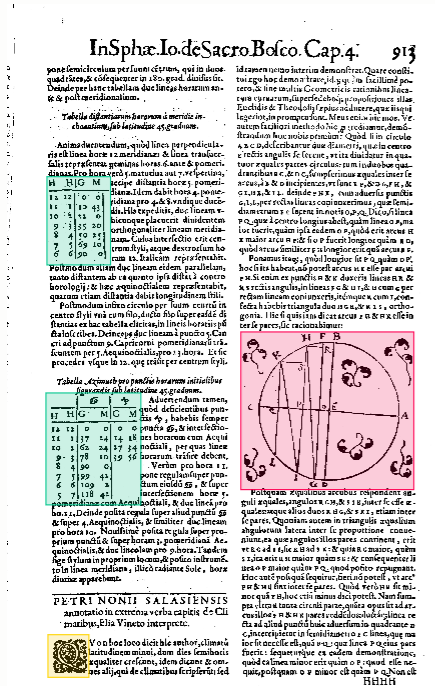
(b) Example of tables inserted into the text.
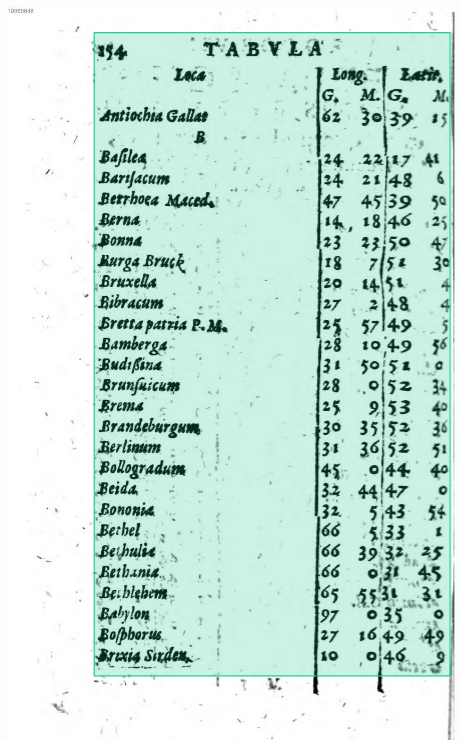
(c) Example of a table.
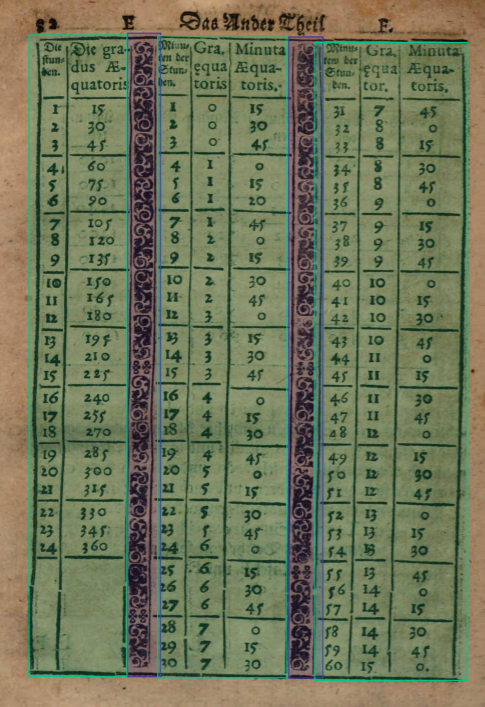
(d) Example of tables with ornaments.
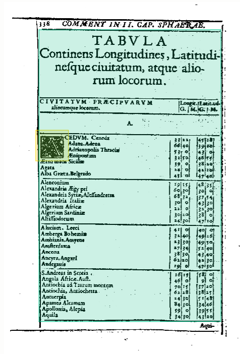
(e) Example of a table with an initial.
Figure 8. Examples of tables.